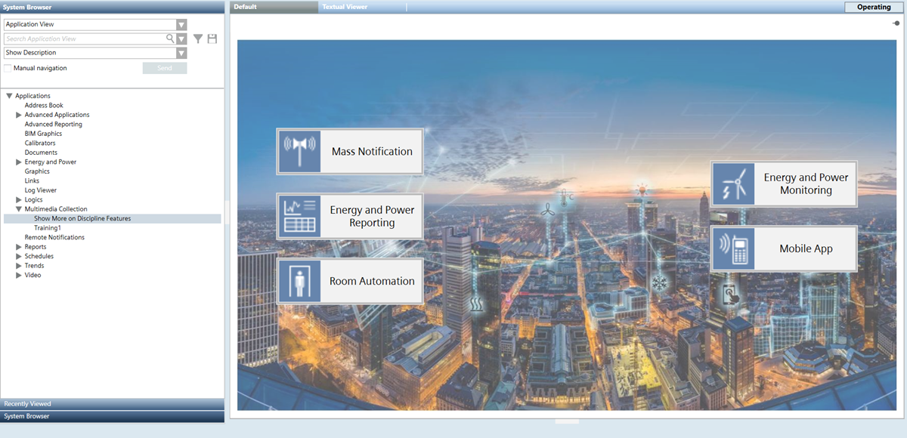
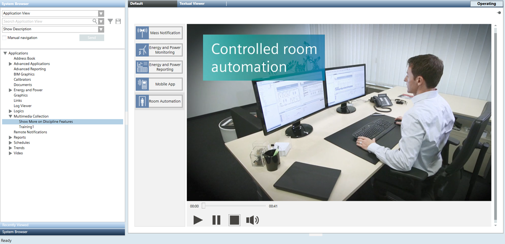

Multimedia Collection
Desigo CC lets you play back different media files (MP3 for audio files, MP4 for videos, and HTML pages with videos), for example, to watch videos illustrating the various supported disciplines.
When you select a multimedia collection (for example, Show More on Discipline Features) in System Browser, the Default tab displays a welcome page with a button for each topic configured (in this case, discipline buttons such as: Mass Notification, Energy and Power Reporting, Room Automation, and the mobile app). Clicking one of the buttons results in the corresponding media file being played on the right while the buttons stay available on the left. The typical player buttons are also available to start, pause, stop, and mute the media file.
Playing Media Files
- System Manager is in Operating mode.
- In System Browser, select Application View.
- Select Applications > Multimedia Collection > [multimedia collection].
- The Default tab displays a welcome page with a button for each media file configured.

- Click the button that corresponds to the topic whose media file you want to play.
- The Default tab refreshes. Depending on the media file available for the selected topic, one of the following starts playing: MP3 for audio files, MP4 for videos, or HTML pages with videos.
